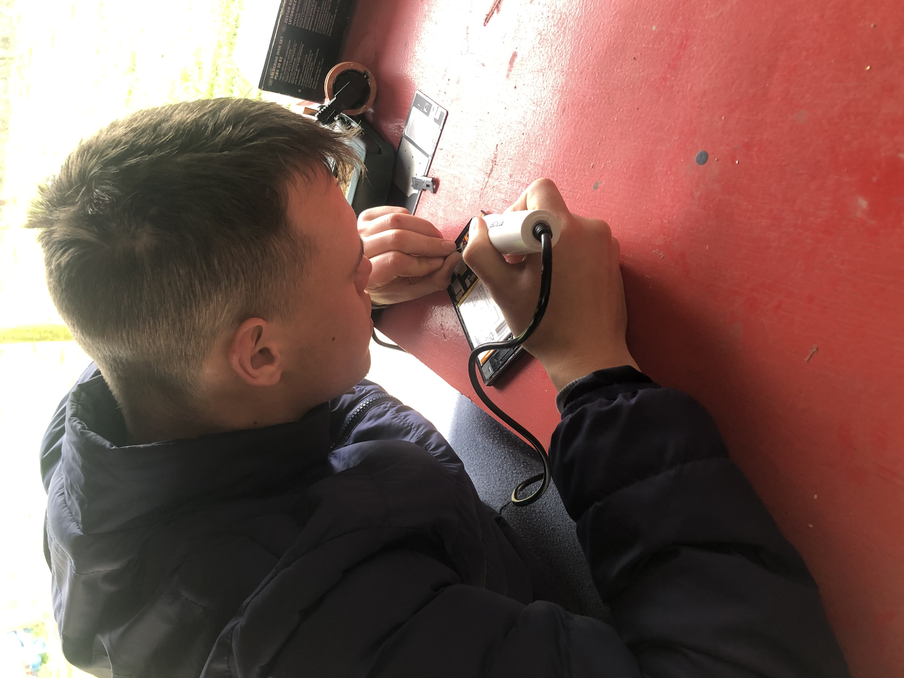
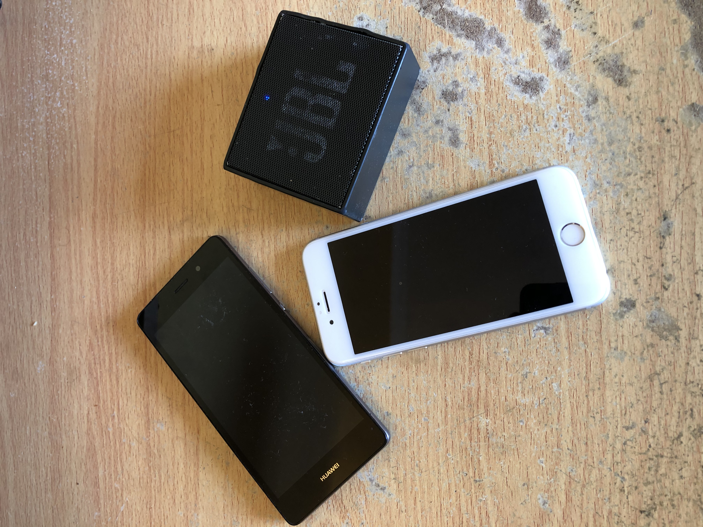
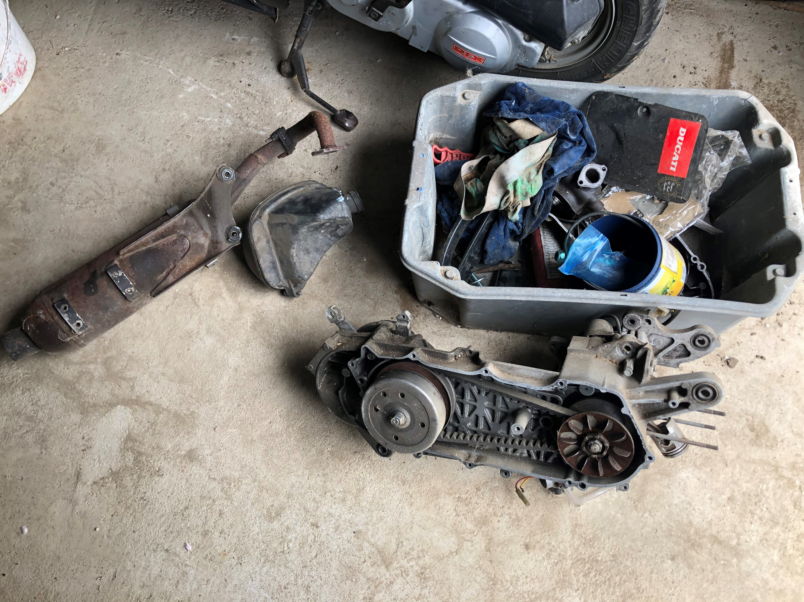

Ezen az oldalon részletezem az eddigi munkáim és a jövőbeli terveim. A képek megtalálhatóak a Galéria oldalon.
Régebben főleg telefonok javításával foglalkoztam. Ismerősök körében cseréltem kijelzőt, akkumlátort vagy üvegfóliát helyeztem fel kezdetben. Később elkezdtek érdekelni a "főzött" (custom) ROM-ok. Ekkor cseréltem a gyári lelassult telefonok szoftverét egy újabb, letisztultabb változatra, ami megnövelte a használhatóságának idejét. Mostanában a Galériában látható telefonokat szereltem 1-2 régebbi van közte. A legújabb javításaim közé tartozik a képen látható Sony Xperia Z készülék, melyet tulaja annyira megszeretett, hogy nem szeretné lecserélni. Ezeknek a készülékeknek tipikus gondja, hogy a micro USB port és az alaplap közötti forrasztás elpattan. Így megpróbáltam megforrasztani. Szerencsére sikerrel is jártam, igaz sajnos már ezekhez a forrasztásokhoz is egy mikroszkóp sokat segítene.
Amikor éppen ezeket a sorokat gépelem be egy JBL GO hangszóró van szétszedve mellettem, aminek a membránjában szakadás van és az akkumlátora sem bír ki többet háromnegyed óránál. Remélem amikorra felkerül ez a weboldal addigra már ki fogom cserélni mindkettőt benne. Ezenkívül még 2 telefon akkumlátorját is addig szeretném kicserélni.
Az elkövetkezendő teendőim közé ez a Suzuki Katana robogó fog tartozni, melynek a hengerfejét kell cserélni, mert a víz beszivárog egy hajszálrepedésen keresztül valószínűleg. Jó munka lesz még összerakni, már a motorblokk részét el is kezdtük bütykölni. A Honda Dio robogón az elöregedett benzincsöveket lekellett cserélni, illetve a karburátort beállítani a helyes működés reményében. Ezenkívül van egy robogónk, aminek a berúgókarja elkopott, ezt szeretném megjavítani a közeljövőben.